All files were generated with GNU Octave 6.2.0 on Debian 11 using "Dataset Viewer, version 1.0". All examples are based on the dataset "ts1_wc040_d50_6.oct", which is freely available at the following URL: https://doi.org/10.3217/bhs4g-m3z76
examples/
├── plot2d
│ ├── ts1_wc040_d50_6_c288.png
│ ├── ts1_wc040_d50_6_cs288_stacked.png
│ ├── ts1_wc040_d50_6_multiple_stacked.png
│ └── ts1_wc040_d50_6_s288.png
├── plot3d
│ ├── ts1_wc040_d50_6_c_all.png
│ ├── ts1_wc040_d50_6_c_disturbance.png
│ ├── ts1_wc040_d50_6_c_noise.png
│ ├── ts1_wc040_d50_6_c_soundwave.png
│ ├── ts1_wc040_d50_6_s_all.png
│ ├── ts1_wc040_d50_6_s_disturbance.png
│ ├── ts1_wc040_d50_6_s_noise.png
│ └── ts1_wc040_d50_6_s_soundwave.png
├── plotmp4
│ ├── ts1_wc040_d50_6_c.mp4
│ ├── ts1_wc040_d50_6_cs_combined.mp4
│ ├── ts1_wc040_d50_6_cs_stacked.mp4
│ └── ts1_wc040_d50_6_s.mp4
├── plottem
│ ├── ts1_wc040_d50_6_tem_t1.png
│ ├── ts1_wc040_d50_6_tem_t1-t3.png
│ ├── ts1_wc040_d50_6_tem_t1-t4.png
│ ├── ts1_wc040_d50_6_tem_t2.png
│ ├── ts1_wc040_d50_6_tem_t3.png
│ └── ts1_wc040_d50_6_tem_t4.png
├── README.html
└── README.md
All files listed above are licenced under the Creative Commons Attribution 4.0 International licence.


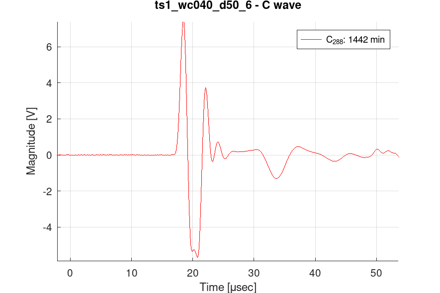
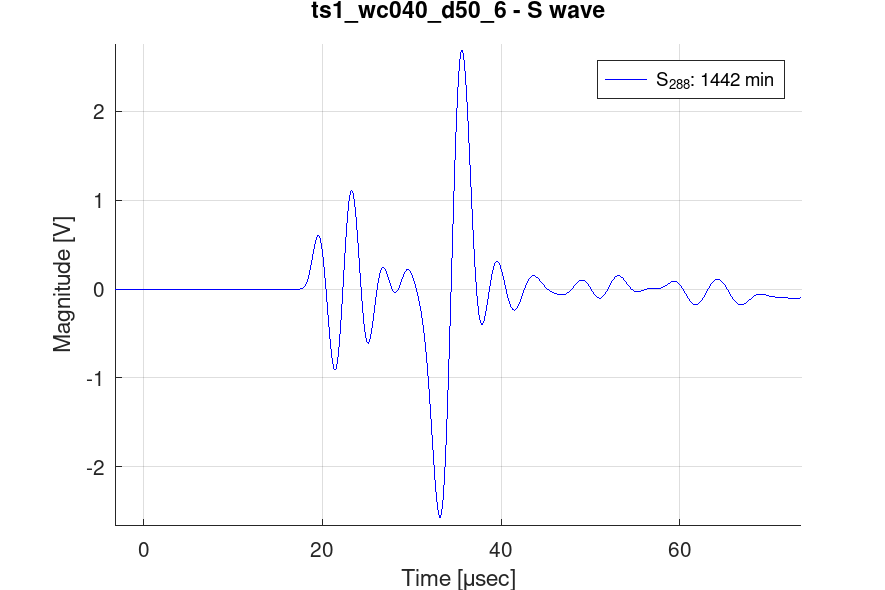
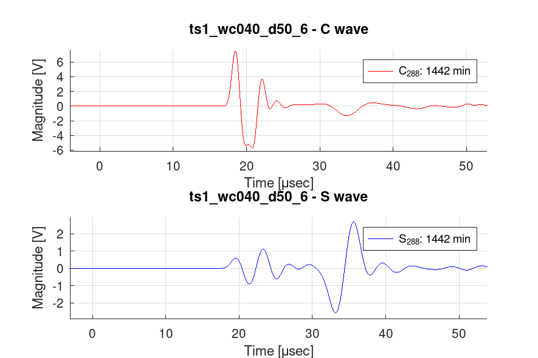
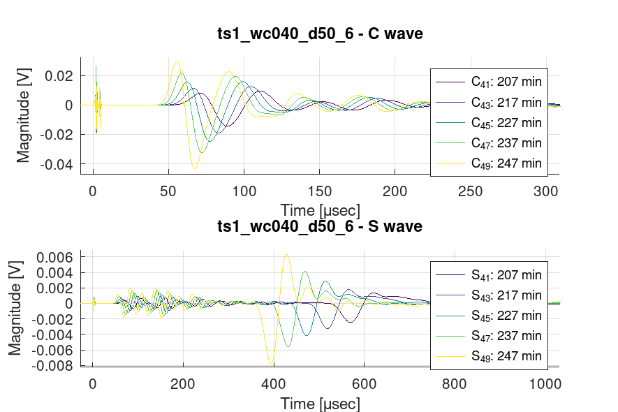
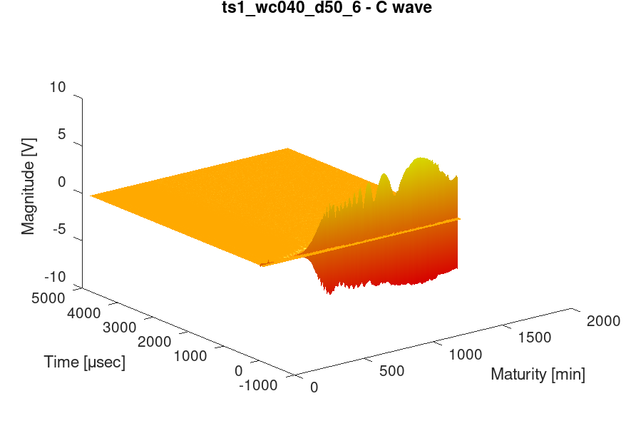
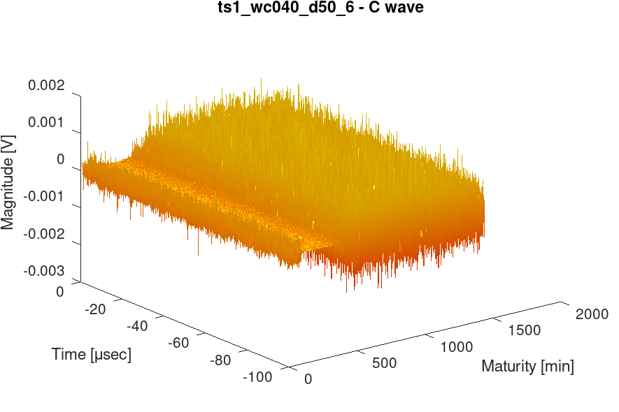
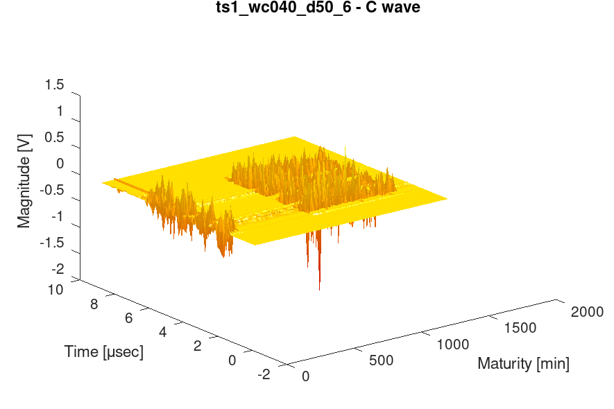
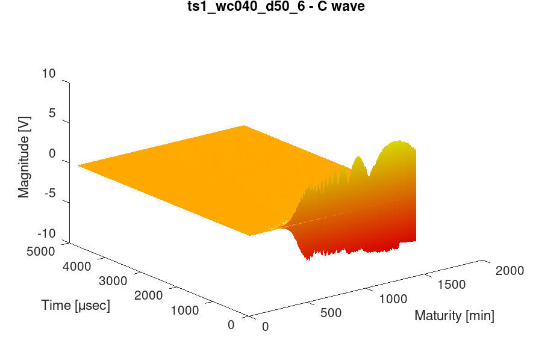
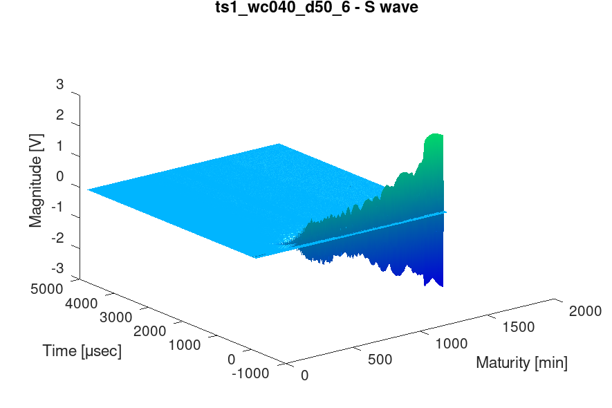
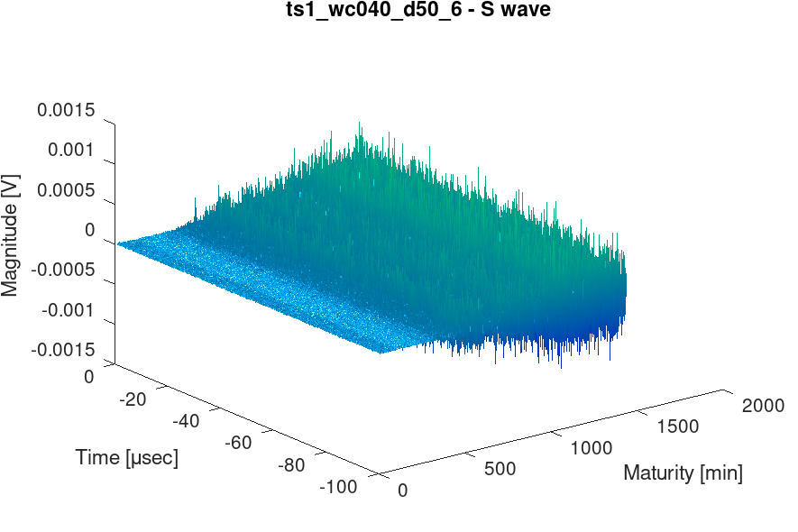
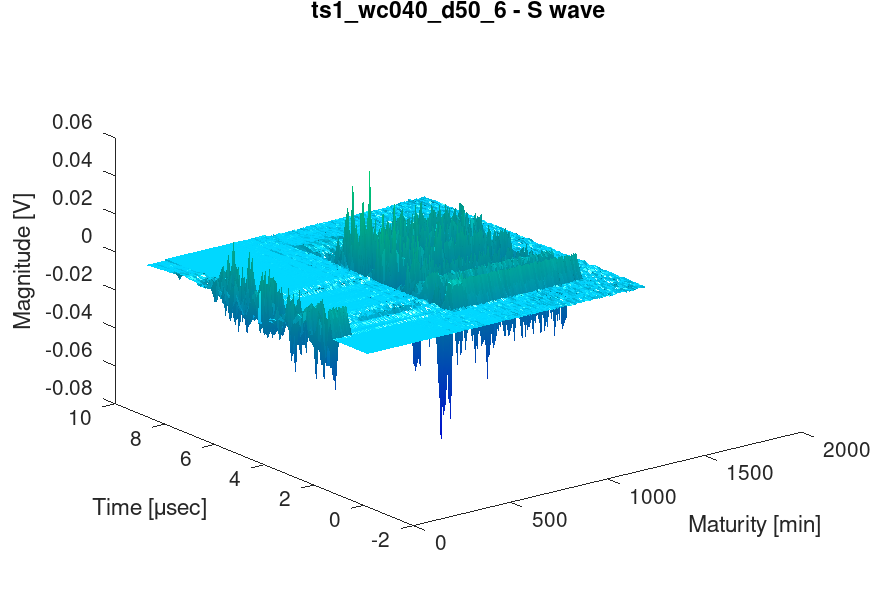
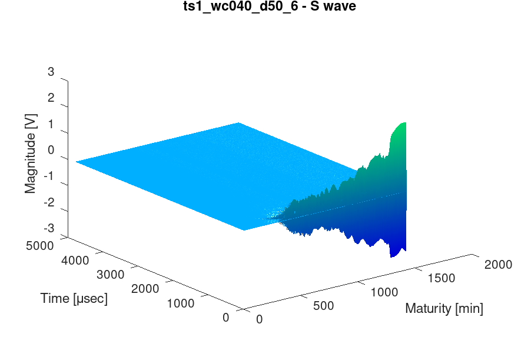
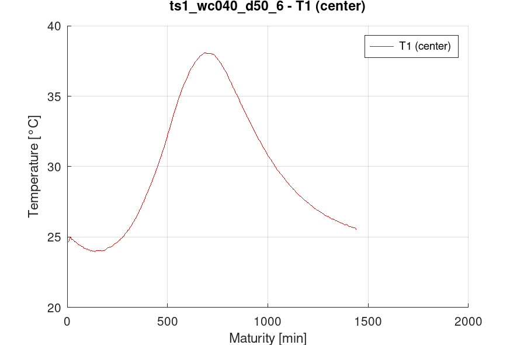
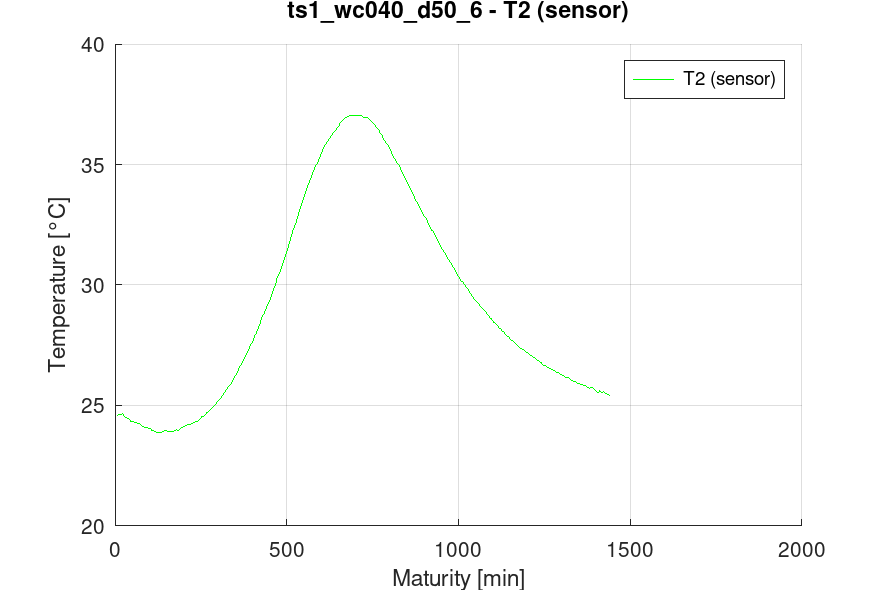
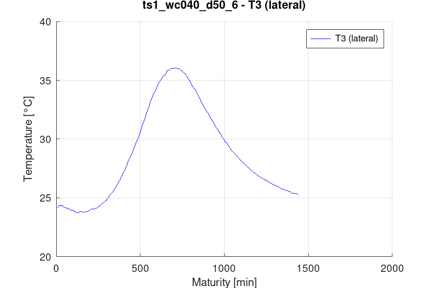
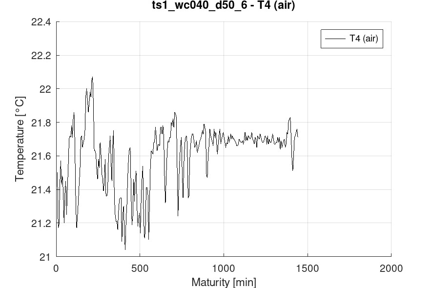
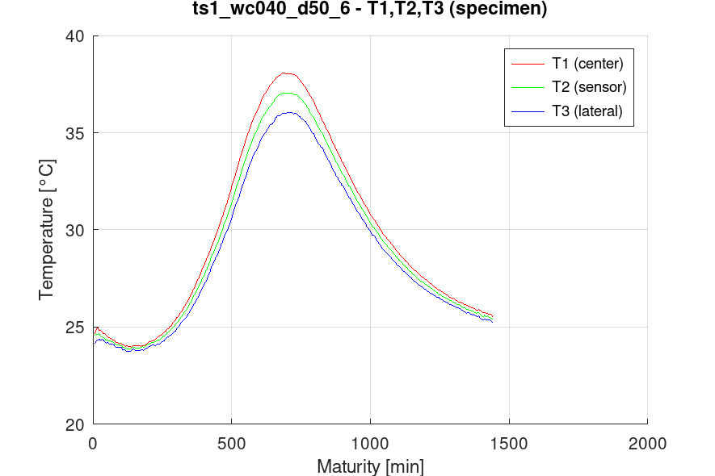
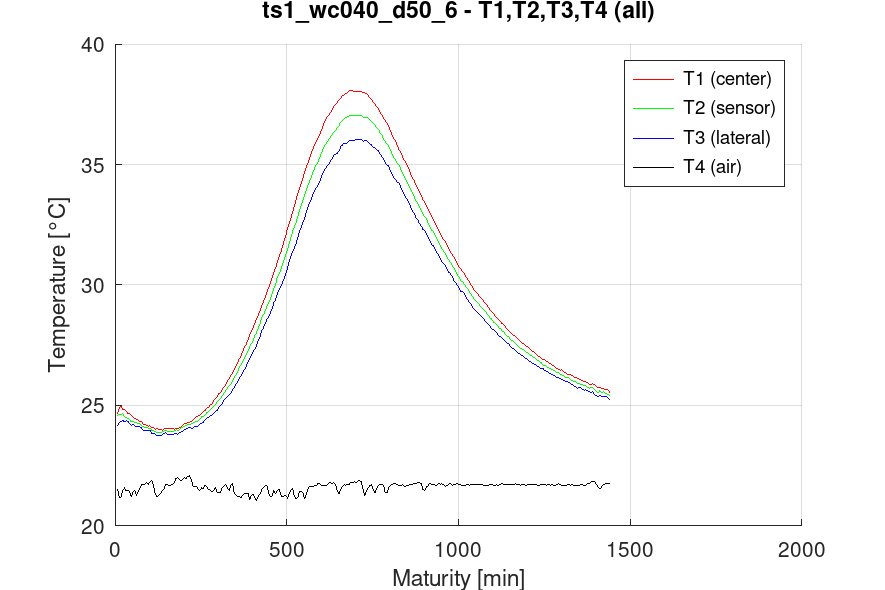